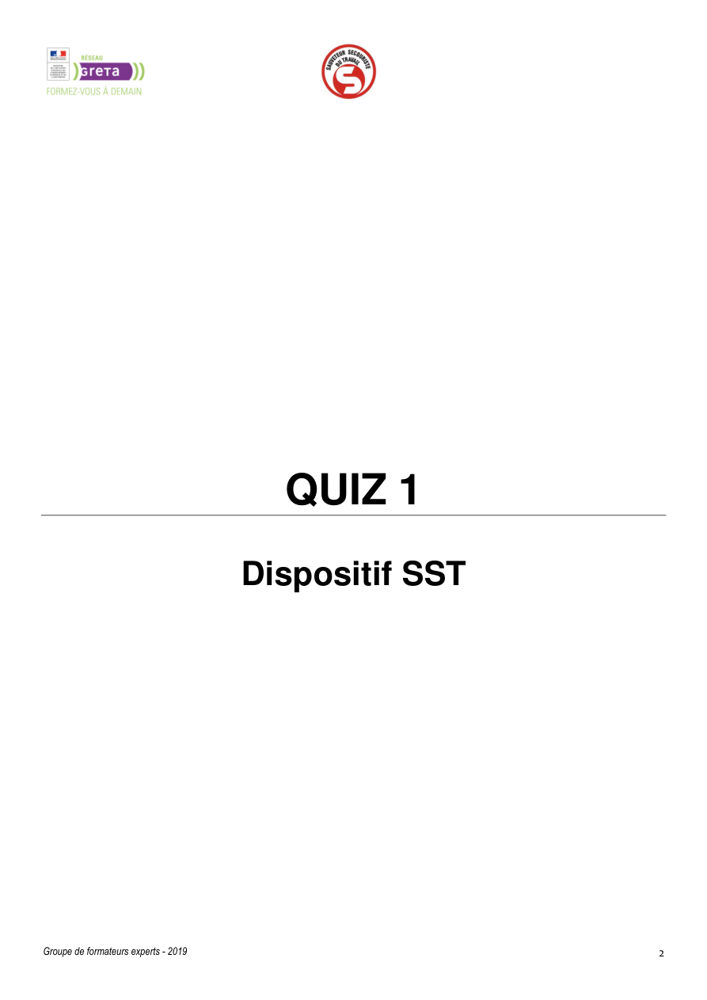

Sauvetage-secourisme du travail — INRS
Portail officiel pour retrouver les repères SST, publications et accès vers les ressources associées.
Ouvrir
Sauvetage-secourisme du travail — INRS
Portail officiel pour retrouver les repères SST, publications et accès vers les ressources associées.
Ouvrir
Démonstrations fiables
Vidéos pratiques INRS
Une page dédiée pour accéder aux ressources officielles INRS utiles en animation de séquence, sans embed instable ni document parasite.
Sauvetage-secourisme du travail — INRS
Portail officiel pour retrouver les repères SST, publications et accès vers les ressources associées.
Ouvrir
 Chaîne YouTube INRS
Accès direct aux vidéos publiées par l’INRS pour illustrer prévention, gestes et situations de travail.
Ouvrir
Chaîne YouTube INRS
Accès direct aux vidéos publiées par l’INRS pour illustrer prévention, gestes et situations de travail.
Ouvrir

Révision express Associer les vidéos à la révision terrain pour consolider les automatismes avant ou après démonstration. OuvrirParcours conseillé
Utiliser la vidéo comme support, puis basculer immédiatement vers l’outil ou la fiche adaptée.
Voir aussi
Accéder aux outils complémentaires les plus utiles après une vidéo.
 PI SST
PI SST Ressources formateur
Ressources formateur